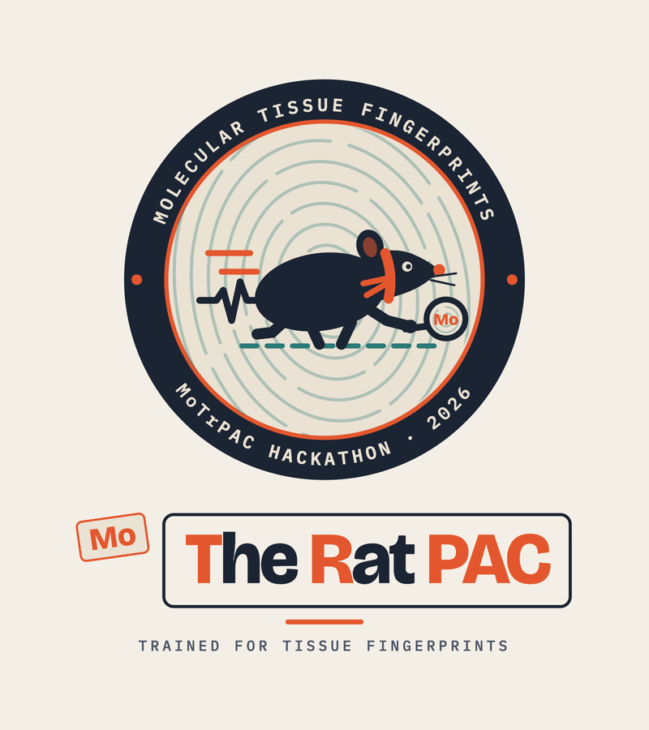

About
Team

The Rat PAC. Erol Evangelista, Cory Gardner, Samuel Montalvo and Manasa Rapuru. Stanford Bioinformatics Center / MoTrPAC Hackathon, 25–27 September 2026.
- Cory Gardner (team lead): the analysis pipeline and the evaluation design (animal-grouped folds, the round-robin panel selector, conformal prediction sets, the shift ladder with the rat BodyMap and GTEx transfers, the batch audit on MoTrPAC's bridging reference pools); the tested repository, provenance and site build.
- Samuel Montalvo: product and visual design (the Check samples interface and the interactive explorer); the exercise analysis (training effects on the panel, VO2max and body composition).
- Manasa Rapuru: the multi-omic follow-up (the proteomics reporter-ion rescue, the protein and metabolite transfers to the GTEx proteome and Metabolomics Workbench) and its pre-registration.
- Erol Evangelista (writer): the README and documentation, the site's text and glossary, the slides and the speaking script; the marker-gene interpretation.
- All four: the study design, review of every result against the evaluation rules frozen on day one (
docs/EVALUATION_RULES.md), and the presentation.
Use of AI. Claude Code was used for code generation and drafting; every result was re-derived and verified by the team.
The challenge
Molecular Tissue Fingerprints — Can molecular signatures identify a tissue reliably?
Use one or more omics layers to predict tissue identity and determine whether a compact, interpretable signature is sufficient. Data: individual-sample rat endurance-training data across a selected set of tissues, with GTEx or another tissue resource for external context.
Data sources and licences
- MoTrPAC 6-month rat endurance-training study, portal release c1.0 (rn6), as the R package MotrpacRatTraining6moData 2.0.0, exported once to CSV with
R/export_motrpac.R. Used under the consortium's data-use terms; MoTrPAC Study Group, Nature 629:174–183 (2024). - Rat BodyMap, GEO GSE53960 (Yu et al., 2014), via the Bioconductor package
bodymapRat: organs across four ages, technical runs summed. GEO data; the package is CC BY 4.0. - GTEx v8 open-access gene expression (release 2017-06-05, RNASeQCv1.1.9 TPM and read counts) and sample attributes, a donor-capped subset per tissue. Free to use under the GTEx data-use policy.
- Orthology: the rat-to-human table shipped with the MoTrPAC package (1:1 pairs only).
For the multiomic follow-up:
- MoTrPAC proteomics reporter-ion files from the Data Hub quant-id folders (
proteomics-untargeted/<tissue>/prot-pr/, peptide-level reporter-ion intensities and vial metadata), releases c1.0 (rn6) and c2.0 (rn7). Consortium data-use terms. - Human TMT proteome of GTEx tissues: Jiang et al., Cell 183:269–283 (2020), doi:10.1016/j.cell.2020.08.036, PRIDE PXD016999.
- Human label-free tissue atlas: Wang et al., Mol Syst Biol 15:e8503 (2019), doi:10.15252/msb.20188503, PRIDE PXD010154. CC BY 4.0.
- Mouse SILAC tissue proteome: Geiger et al., Mol Cell Proteomics 12:1709–1722 (2013), doi:10.1074/mcp.M112.024919.
- Mouse exercise metabolome: Sato et al., Cell Metab 34:329–345 (2022), doi:10.1016/j.cmet.2021.12.016.
- Mouse aging metabolome: Metabolomics Workbench study ST003188, “A metabolic atlas of mouse aging” (Mullen Lab, University of Southern California; project PR001984), doi:10.21228/M88J0W. CC BY 4.0.
Download URLs and sha256 of the external files are in docs/REPRODUCIBILITY.md and results_multiomic/02_discovery/download_log.csv. The third-party data the repository contains, with their licences and what was changed, are listed in NOTICE.md.
The full datasets are not in the repository; the small subsets and derived values that are (a four-sample BodyMap count fixture, log2 CPM of at most 100 genes, per-sample predictions) are listed with their licences in NOTICE.md. data/raw/ (1.9 GB) is recreated by R/export_motrpac.R (make export); data/external/ (5.8 GB) by R/export_bodymap.R (make bodymap, Bioconductor bodymapRat) and, for GTEx, by downloading the three v8 files named in the Makefile and running scripts/11_gtex_prepare.py (make gtex). The full portal download is not needed; phase 16 reads a 165 MB subset of it (the RNA-seq QC table and the 19 per-tissue count files with the reference-standard vials) when MOTRPAC_PORTAL is set, otherwise it uses the package metadata and reports the bridging measurement as pending.
Versions and access dates
Read from site/data/manifest.json.
How to reproduce
conda env create -f environment.yml # or: pip install -r requirements.txt (Python 3.12; versions listed above) make test # leakage, I/O, conformal and site tests make all bodymap gtex # the analysis phases (about 1 h on 20 cores) make identifiability # phase 16: batch nesting and the QC-only baseline make site # export site/data from results/ (or results_frozen/) and run the site tests python -m http.server -d site 8000 # then open http://localhost:8000
Every figure names the results/ file it comes from; site/data/provenance.json records file, row and column for every headline number.
How to cite
See CITATION.cff in the repository, and cite the data: MoTrPAC Study Group (2024) Nature 629:174–183; Yu et al. (2014) Nature Communications 5:3230 (rat BodyMap); the GTEx Consortium (2020) Science 369:1318–1330; and, for the multiomic follow-up, Jiang et al. (2020) Cell 183:269; Wang et al. (2019) Mol Syst Biol 15:e8503; Geiger et al. (2013) Mol Cell Proteomics 12:1709; Sato et al. (2022) Cell Metab 34:329; Metabolomics Workbench ST003188 (doi:10.21228/M88J0W).
Licence
Code and site: MIT (LICENSE). Third-party data and their terms: NOTICE.md. Plotly.js (MIT) is loaded from a CDN with a vendored copy for offline use.